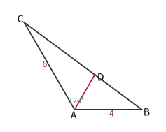

例題 3図形と計量 角の二等分線の長さ（面積で立式）
△ABC で \(AB=4,\ AC=6,\ A=120^\circ\) である。\(A\) の二等分線が辺 BC と交わる点を D とするとき、線分 AD の長さを求めよ。

【答案（テストに書く形）】
\[AD=\dfrac{12}5\]答
△ABC で \(AB=4,\ AC=6,\ A=120^\circ\) である。\(A\) の二等分線が辺 BC と交わる点を D とするとき、線分 AD の長さを求めよ。

【答案（テストに書く形）】
\[AD=\dfrac{12}5\]答